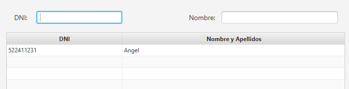
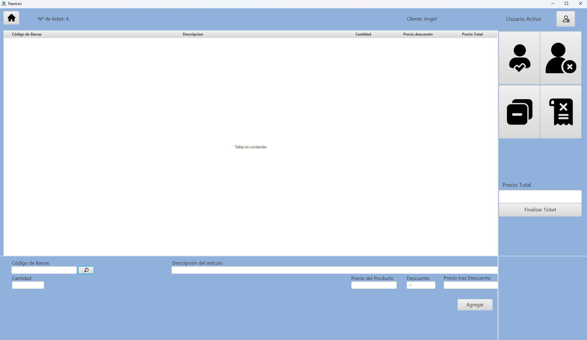
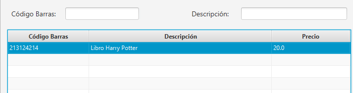
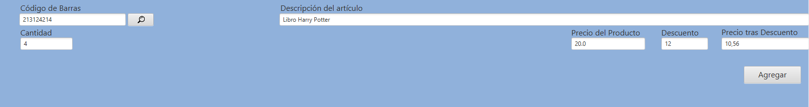
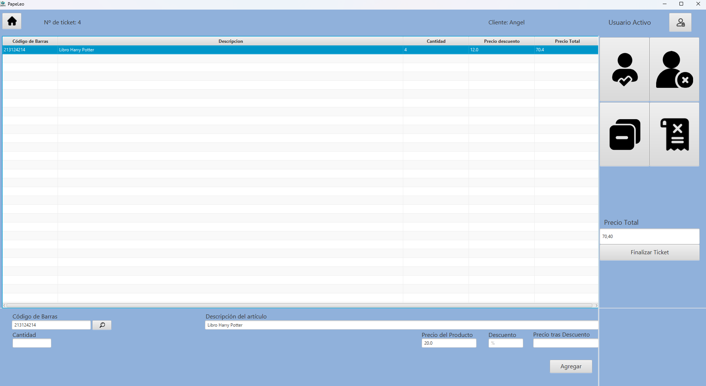

Guía para: ¿Cómo generar un ticket?
En esta guía te explicaremos paso a paso cómo generar un ticket en PapeLeo...
1. Accede a la sección "Tickets"

En la pantalla principal selecciona el icono situado a la izquierda con el texto "Tickets"
2. (Opcional) Agrega un Cliente al Ticket
Nada más iniciar la pantalla de Ticket nos aparecerá arriba a la derecha que no tenemos un Cliente asignado, en caso de que queramos añadirlo basta con pulsar el icono de una persona y un tick para elegir a un Cliente

Podemos seleccionar un cliente ya creado, con los campos de texto podemos filtrar entre nuestras opciones
3. Añade los productos

Ahora ya nos aparecerá el cliente asignado, toca añadir productos para poder generar el Ticket, podemos introducirlo de forma manual en los cuadros de texto de abajo, o de igual forma buscar entre los existentes, en este caso con el icono de la Lupa

Elegimos un producto ya introduce anteriormente, como puede ser este libro de Harry Potter

Y se nos rellenan de forma automatica los campos, exceptuando el de cantidad que debemos indicar, además del descuento en caso de que queramos añadirlo, tras esto pulsamos el boton agregar

Y ya tendríamos el producto añadido, se puede repetir tantas veces como productos deseemos en el Ticket, el precio se calcula automaticamente en el apartado Precio Total, una vez hayamos finalizado nuestro Ticket simplemente debemos pulsar "Finalizar Ticket" y ya tendríamos nuestro Tickets generado